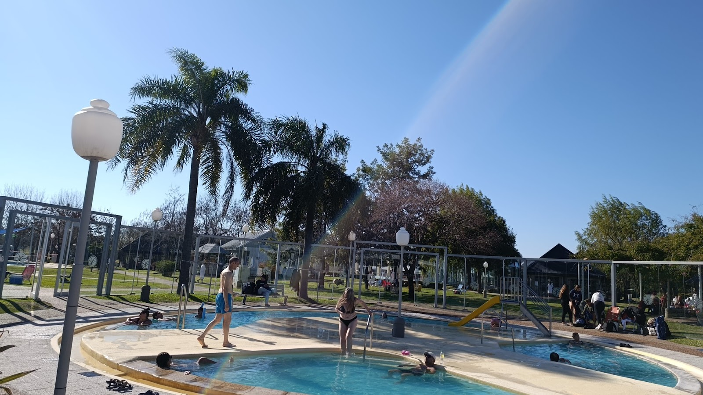

Quilmes · salidas grupales en micro
Te pasan a buscar
por tu casa
Salidas a termas, sierras y playa con choferes propios y servicio puerta a puerta. Vos poné la valija; del resto se encargan ellos.
4,829 reseñas en Google
Las salidas que hacen
Los destinos que los pasajeros nombran en sus reseñas. Las fechas y los cupos se confirman por teléfono: acá no hay una lista de precios inventada.
- Entre Ríos Termas de Villa Elisa Apart y comida, según la reseña de Patricia
- Entre Ríos Termas de Concepción La salida donde estrenó Claudia de los Ángeles
- Programadas Sierras Salidas de fin de semana
- Programadas Playa Salidas de fin de semana
- Un día Excursiones cortas Ida y vuelta en el día
Preguntá por la que se está armando: 011 4254-0508
Cómo funciona el puerta a puerta
- 1
Llamás
Primero preguntás qué salida está armada y para qué fecha.
- 2
Reservás tu lugar
Te confirman el cupo y el punto de recogida.
- 3
Te pasan a buscar
El micro te levanta en el punto acordado, sin trasbordos.
- 4
Volvés sin manejar
El mismo servicio te devuelve al punto de partida.
Lo que cuentan los pasajeros
Excelente servicio!! Termas de Villa Elisa: Hermoso lugar, hermoso el apart, comida deliciosa, el chofer Cali un genio!!
Es el primer viaje que hago con ellos A termas de Concepción. Toda la atención es muy buena. Te hacen sentir especial. El servicio puerta a puerta es para destacar.
Un lujo está empresa atendido por su dueño, atento a cualquier necesidad de los pasajeros, hoteles de primera, excelentes chóferes. Hace varios años q viajamos con Viq Viajes.
Fotos de sus propias salidas

Lo que se pregunta por teléfono
- Qué salida está armada y para qué fecha.
- Desde qué punto te pasan a buscar.
- Qué queda incluido en esa salida y qué se abona aparte.
- Horario de atención
- El horario de atención se confirma por teléfono.
- Dónde están
- Av. 12 de Octubre, B1879 Quilmes, Provincia de Buenos Aires, Argentina.
Cómo llegar - Otro canal
- Instagram de la empresa